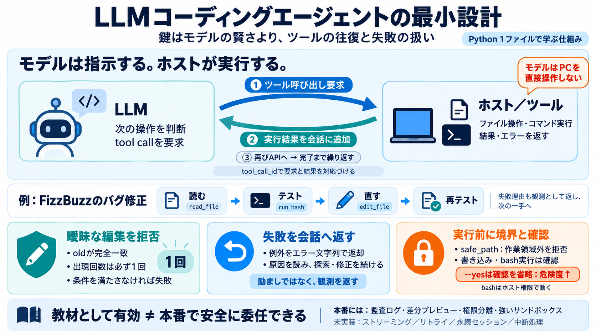

Build a Coding Agent in Python: Step-by-Step Tutorial
Each phase builds on the previous one, and you’ll have working software at every step. ## Phase 1: Minimum Viable Agent…

Each phase builds on the previous one, and you’ll have working software at every step. ## Phase 1: Minimum Viable Agent…
| Name | | Name | Last commit message | Last commit date | --- --- | prompts | | prompts | | | | .envrc | | .envrc …
### Tools Agents gain significant utility through tools, which extend their capabilities with external data, APIs, or f…
An AI agent framework is a software library that provides primitives for building LLM-powered agents: tool calling, mult…
It is really, really, easy to prompt an AI to “take this patch file and backport it to this version of the codebase.” An…